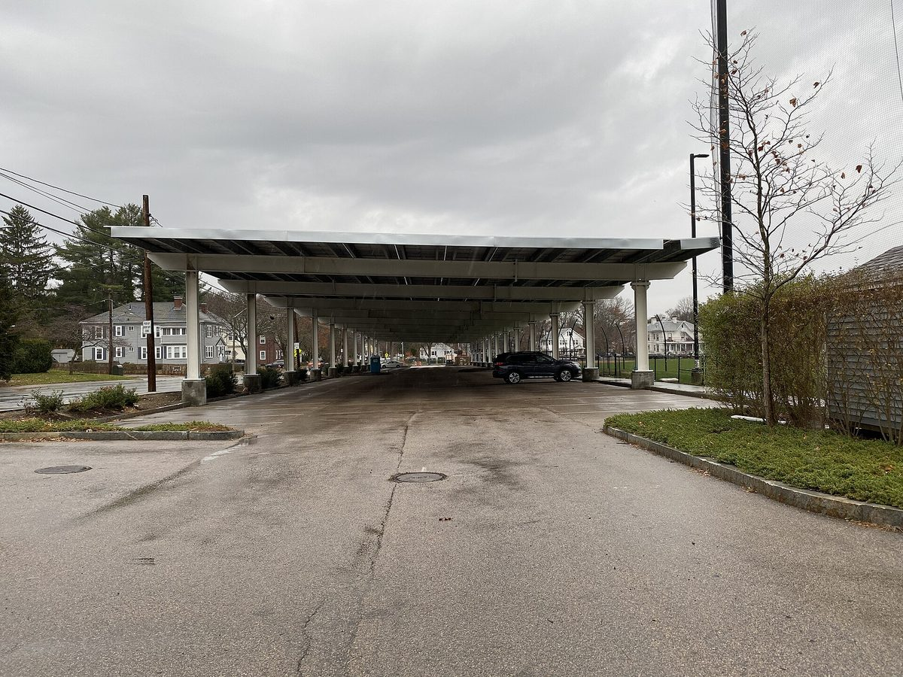

미국 뉴멕시코 라스크루시스 공립학교, 주 기금 350만 달러로 학교 4곳 주차장에 태양광…콘리 초교 226kW

주 재정청 '지역 태양광 접근 기금'에서 초교 3곳 100만 달러씩·고교 50만 달러 승인…교체 앞둔 지붕 대신 주차장 차양 택해, 유지관리는 교육청 몫
미국 뉴멕시코주 라스크루시스 공립학교(LCPS)가 주 정부 기금 350만 달러를 받아 학교 4곳 주차장에 태양광 차양(캐노피)을 세우는 사업을 추진한다. 뉴멕시코 재정청의 '지역 태양광 접근 기금(Local Solar Access Fund)'에서 콘리 커뮤니티 초교·데저트 블룸 초교·페어에이커스 초교가 사업비 전액인 100만 달러씩, 라스크루시스 고교가 사업비 일부인 50만 달러를 승인받았으며, 스티브 로드리게스 운영책임자가 10월 20일 교육위원회에 표결이 필요 없는 정보 보고로 이를 알렸다. 콘리 초교에는 주차장 차양 위에 패널 393장, 226kW 규모의 설비를 계획하고 있고, 교육청은 1년 발전량이 이 학교 연간 전기 사용량의 약 100%를, 라스크루시스 고교에서는 약 60%를 상쇄할 것으로 내다봤다. 다만 이 수치는 완공된 설비의 실적이 아닌 예측치이며, 4곳 전체의 절감액과 완공 일정은 아직 나오지 않았다. 지붕이 아닌 주차장을 고른 것은 학교 지붕 상당수가 교체 시기여서 지붕 공사 때 패널을 떼어 내야 할 수 있기 때문이며, 남는 전기는 지역 전력회사 엘패소 일렉트릭을 통해 요금 공제로 받는 방안을 검토하고 있다. 보조금은 설치비를 대지만 유지관리는 교육청 몫이어서 로드리게스 책임자는 장기 관리 계획이 필요하다고 인정했고, 에드 프랭크 교육위원은 장기 절감액 추정치를 만들어 주 지원을 이어 갈 근거로 삼고 전기요금으로 나갈 돈을 교실로 돌리자고 제안했다.
시민에너지 관점
교체를 앞둔 지붕 대신 주차장을 쓰고, 226kW 차양 하나로 학교 한 해 전기를 거의 채울 수 있다는 전망은 학교 주차장과 지붕이 그 자체로 지역의 발전 자산이 될 수 있음을 보여 준다. 그러나 주 기금이 설치비만 대는 방식은 수십 년 유지관리를 학교에 남기고, 기금이 끊기면 다음 학교로 이어지기 어렵다는 한계가 있다. 프랑스 파리의 시민 태양광 협동조합 엔에르시티프는 조합원 출자로 학교 등 시 건물 지붕에 발전소를 짓고 15년 동안 직접 운영한 뒤 시에 넘기는 방식을 쓰고 있어, 학교는 관리 부담을 덜고 주민은 동네 발전소의 주인이 된다. 국내 학교 태양광도 예산 보조로만 짓지 말고 학부모와 주민이 출자하는 조합이 학교와 함께 소유하고 운영하는 길을 교육청 사업에 열어야 한다.
출처: Organ Mountain News 2026-10-26 Damien Willis 원문 보기
米ニューメキシコ州ラスクルーセス公立学校、州基金350万ドルで4校の駐車場に太陽光…コンリー小は226kW
州財政庁「地域太陽光アクセス基金」から小学校3校に100万ドルずつ・高校に50万ドルを承認…改修を控えた屋根ではなく駐車場キャノピーを選択、維持管理は学区の負担
米ニューメキシコ州のラスクルーセス公立学校（LCPS）が、州の基金350万ドルを受けて4校の駐車場に太陽光キャノピー（屋根付き駐車設備）を設ける事業を進める。ニューメキシコ州財政庁の「地域太陽光アクセス基金（Local Solar Access Fund）」から、コンリー・コミュニティ小学校、デザート・ブルーム小学校、フェアエーカーズ小学校が事業費全額にあたる100万ドルずつ、ラスクルーセス高校が事業費の一部にあたる50万ドルの承認を受け、スティーブ・ロドリゲス運営責任者が10月20日の教育委員会で、採決を伴わない情報報告としてこれを伝えた。コンリー小学校では駐車場キャノピーの上にパネル393枚、226kWの設備を計画しており、学区は年間発電量が同校の年間電力使用量の約100%を、ラスクルーセス高校では約60%を相殺すると見込む。ただしこれらは完成した設備の実績ではなく予測値で、4校全体の削減額と完成時期はまだ示されていない。屋根ではなく駐車場を選んだのは、多くの校舎の屋根が改修時期を迎えており、屋根工事の際にパネルを外す必要が生じうるためで、余剰電力は地域の電力会社エルパソ・エレクトリックを通じて料金控除として受け取る方法を検討している。補助金は設置費をまかなうが維持管理は学区の負担となるため、ロドリゲス責任者は長期の管理計画が必要だと認め、エド・フランク教育委員は長期の削減額の推計をまとめて州の支援継続の根拠とし、電気料金に消える資金を教室に回すよう提案した。
市民エネルギーの視点
改修を控えた屋根の代わりに駐車場を使い、226kWのキャノピー一つで学校の1年分の電力をほぼまかなえるという見通しは、学校の駐車場や屋根がそれ自体で地域の発電資産になりうることを示している。しかし州の基金が設置費だけを出す方式では、数十年にわたる維持管理が学校に残り、基金が途切れれば次の学校へ広がりにくいという限界がある。フランス・パリの市民太陽光協同組合エネルシティフは、組合員の出資で学校など市の建物の屋根に発電所を建て、15年間自ら運営したうえで市に引き渡す方式をとっており、学校は管理の負担が軽くなり、住民は地域の発電所の持ち主になる。韓国の学校太陽光も予算補助だけで建てるのではなく、保護者と住民が出資する組合が学校とともに所有・運営する道を教育庁の事業に開くべきだ。
出典: オーガン・マウンテン・ニュース 2026-10-26 デイミアン・ウィリス 原文を読む
美国新墨西哥州拉斯克鲁塞斯公立学校获州基金350万美元，在4所学校停车场建光伏…康利小学226kW
州财政局"地方太阳能准入基金"批准3所小学各100万美元、1所高中50万美元…不选即将翻修的屋顶而选停车场车棚，运维由学区负担
美国新墨西哥州拉斯克鲁塞斯公立学校（LCPS）获得州政府基金350万美元，将推进在4所学校停车场建设光伏车棚的项目。新墨西哥州财政局"地方太阳能准入基金（Local Solar Access Fund）"批准康利社区小学、沙漠花开小学和费尔埃克斯小学各获得相当于项目全额的100万美元，拉斯克鲁塞斯高中获得相当于部分项目费用的50万美元；学区运营主管史蒂夫·罗德里格斯10月20日在教育委员会上以无需表决的信息报告形式通报了这一消息。康利小学计划在停车场车棚上安装393块光伏板、规模226kW的设备，学区预计其年发电量可抵消该校年用电量的约100%，拉斯克鲁塞斯高中可抵消约60%。不过这些数字是预测值，并非已建成设备的实绩，4所学校的总节省金额和完工时间尚未公布。之所以选停车场而不是屋顶，是因为不少校舍屋顶已到翻修期，屋顶施工时可能需要拆下光伏板；多余电力方面，学区正在研究通过当地电力公司埃尔帕索电力以电费抵扣的方式获得收益。补助金承担安装费用，但运维由学区负责，罗德里格斯承认需要制定长期管理计划；教育委员埃德·弗兰克则建议估算长期节省金额，作为争取州政府持续支持的依据，并把原本花在电费上的钱转用于课堂。
市民能源视角
用即将翻修的屋顶之外的停车场，一座226kW车棚就有望满足一所学校全年的用电，这说明学校的停车场和屋顶本身就可以成为地方的发电资产。但州基金只承担安装费用的方式，会把数十年的运维留给学校，一旦基金中断，也难以推广到下一所学校。法国巴黎的市民光伏合作社Enercitif以社员出资在学校等市政建筑屋顶上建电站，自行运营15年后移交给市政府，学校减轻了管理负担，居民也成了社区电站的主人。韩国的学校光伏也不应只靠预算补助来建，而应在教育厅的项目中为家长和居民出资的合作社与学校共同拥有、共同运营打开通道。
来源: 奥根山新闻 2026-10-26 达米安·威利斯 查看原文
Las Cruces Public Schools in New Mexico to put solar over parking lots at four schools with $3.5 million in state funds; 226 kW at Conlee Elementary
State Finance Authority's Local Solar Access Fund approves $1 million each for three elementary schools and $500,000 for a high school; parking canopies chosen over roofs due for replacement, with maintenance left to the district
Las Cruces Public Schools (LCPS) in New Mexico is moving ahead with solar canopies over the parking lots of four schools after receiving $3.5 million in state funding. From the New Mexico Finance Authority's Local Solar Access Fund, Conlee Community Elementary, Desert Bloom Elementary and Fairacres Elementary were each approved for $1 million, covering their full project costs, while Las Cruces High School was approved for $500,000, covering part of its project; Chief of Operations Steve Rodriguez reported this to the Board of Education on October 20 in an informational item that required no vote. At Conlee, the district plans a 226 kW system of 393 panels on parking canopies and projects that a year's output will offset about 100% of the school's annual electricity use, with about 60% expected at Las Cruces High. These figures are projections rather than results from completed systems, and neither total savings for the four schools nor a completion timeline has been released. The district chose parking lots over roofs because many school roofs are due for replacement and panels might have to be removed during that work, and it is exploring how surplus power could be credited through the local utility, El Paso Electric. The grants cover installation, but maintenance falls to the district; Rodriguez acknowledged the need for a long-term upkeep plan, and board member Ed Frank proposed developing long-term savings estimates to support continued state funding and redirecting money otherwise spent on utilities toward classrooms.
Citizen Energy View
Using parking lots instead of roofs due for replacement, with a single 226 kW canopy expected to cover nearly a year of a school's electricity, shows that school parking lots and roofs can themselves become local generating assets. But a model in which state funds pay only for installation leaves decades of maintenance with the school and makes it hard to reach the next school once the funding stops. In Paris, the citizen solar cooperative Enercitif builds plants on the roofs of schools and other city buildings with members' investment, runs them itself for 15 years and then hands them over to the city, easing the burden on schools while making residents owners of their neighbourhood power plants. Korea's school solar programmes should likewise go beyond budget subsidies and open education office projects to cooperatives in which parents and residents invest and own and run the systems together with schools.
Source: Organ Mountain News 2026-10-26 Damien Willis Read the original